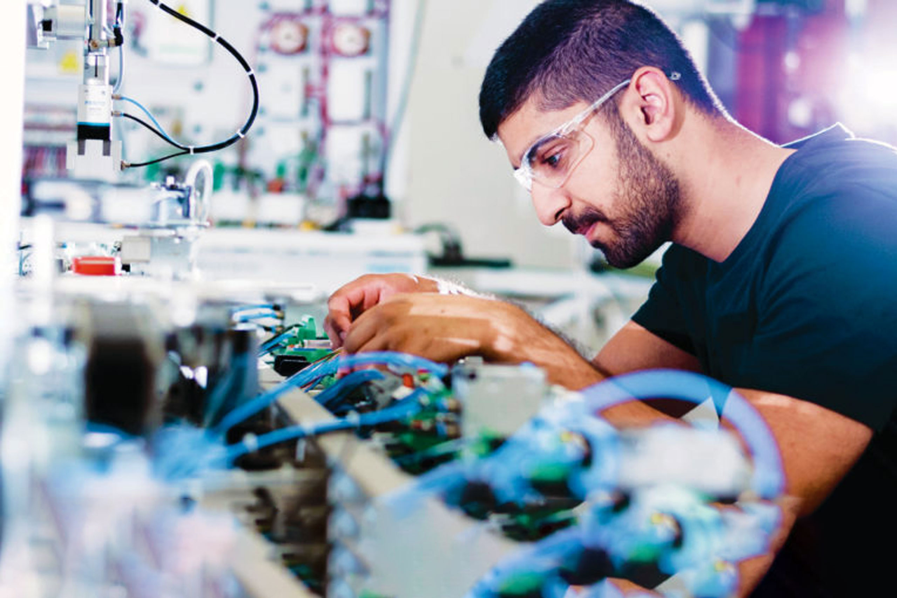

DEPARTMENT OF INSTRUMENTATION AND AUTOMATION TECHNOLOGY

At present, the world is being transformed into an interconnected and automated ecosystem at an unprecedented rate owing to the extraordinary human innovations in the fields of engineering and technology. The Department of Instrumentation and Automation Technology of the Faculty of Technology, University of Colombo is committed to produce well-rounded graduates, equipped with the latest technological tools to guide the nation via the emergent technological transition while being the frontrunners of the technological innovations in the region. Department conducts Bachelor of Engineering Technology Honours in Instrumentation and Automation. The program provides adequate knowledge of mathematics, natural sciences, engineering fundamentals, and engineering specialization in instrumentation and automation technology to design solutions for broadly defined engineering technology problems and contribute to the design of systems, components or processes to meet specified needs with appropriate consideration for public health and safety, cultural, societal, and environmental concerns. In addition to the core courses in instrumentation and automation, the course modules offer under the degree program consist of computer science, English, and supplementary courses that enable students to function effectively as an individual, and as a member of diverse teams in different settings. In the long run, the application oriented in-depth knowledge and hands-on experience in instrumentation and automation, that imparted during the program will empower the undergraduates with a dazzling passion, to innovate and use appropriate technologies headed for entrepreneurships and high quality research in industry and academia.
CONTACT US
Faculty of Technology, University of Colombo, Mahenwatta, Pitipana, Homagama, Sri Lanka.
Dean Office
+94112078607
dean@tec.cmb.ac.lk